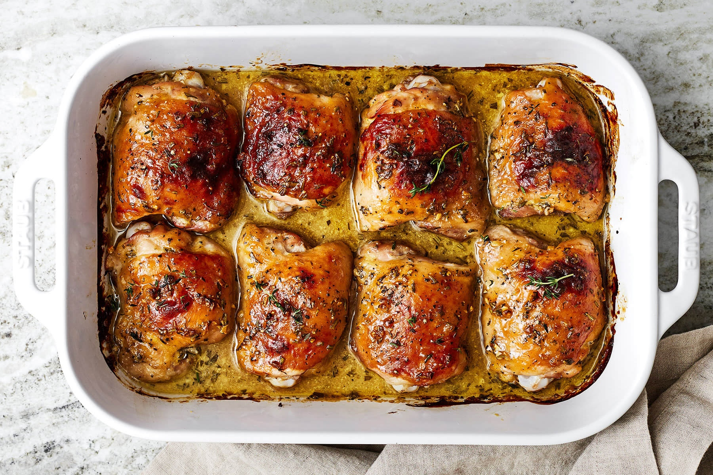

Back

Ingredients (Sauce)
- 1/4 Cup Honey
- 1/4 Cup Dijon Mustard
- 2 Garlic Cloves (1/4 tsp Garlic Powder)
- 1 tbsp Olive Oil
- 3/2 tsp Rosemary
- 3/2 tsp Thyme
- 1/2 tsp Salt
- 1/4 tsp Pepper
Steps
- Preheat Oven to 350F.
- Place thighs in baking dish and pat dry.
- Mix sauce ingredients well, should be a syrupy consistency.
- Baste chicken liberally, pour the rest in the dish.
- Bake for 45-60 minutes.
- Check temperature periodically and take out when internal temp reaches 165F.